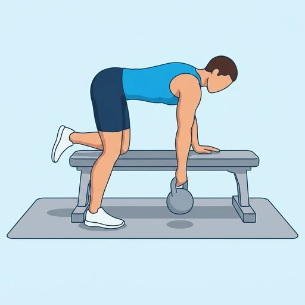

One Arm Kettlebell Row
A unilateral rowing exercise with bench support, building the lats and mid-back one side at a time.
Back · Kettlebell · Intermediate


Muscles worked by the One Arm Kettlebell Row
Primary
Secondary
Also called: lats, lat, latissimus dorsi, latissimus, back wings, rhomboid.
Equipment
Also called: kb, cast iron kettlebell, competition kettlebell, girya.
How to do the One Arm Kettlebell Row
- Place one hand and knee on a bench for support.
- Hold a kettlebell in the opposite hand with your arm extended.
- Pull the kettlebell toward your hip by driving your elbow back.
- Squeeze your back at the top of the movement.
- Lower the kettlebell with control.
- Complete reps on one side, then switch.
Form tips
- Keep your torso square to the floor throughout the set.
- Pull with your back muscles rather than just your arm.
- Keep your neck neutral, eyes on the floor just ahead.
At a glance
| Body part | Back |
|---|---|
| Category | Strength |
| Force type | Pull |
| Mechanic | Compound |
| Difficulty | Intermediate |
| Equipment | Kettlebell |
| Goals | Hypertrophy, Strength |
| Tags | Knee safe, Lower back safe, Shoulder safe, No axial load |
| MET | 6.0 (metabolic equivalent, for calorie estimates) |
| Unilateral | Yes |
| Bodyweight | No |
| Dataset id | one-arm-kettlebell-row |
One Arm Kettlebell Row in German & Spanish
| German | Einarmiges Kettlebell-Rudern |
|---|---|
| Spanish | Remo con Pesa Rusa a Un Brazo |
Descriptions, instructions and tips ship in all three languages in the JSON.
Related exercises
Exercise data (JSON)
The record below is exactly what exercises.json ships for this exercise — names, descriptions, instructions and tips in English, German and Spanish.
{
"id": "one-arm-kettlebell-row",
"name_en": "One Arm Kettlebell Row",
"name_de": "Einarmiges Kettlebell-Rudern",
"name_es": "Remo con Pesa Rusa a Un Brazo",
"description_en": "A unilateral rowing exercise with bench support, building the lats and mid-back one side at a time.",
"description_de": "Ein einarmiges Kettlebell-Rudern mit Abstützung auf einer Bank, das den Latissimus und den oberen Rücken kräftigt.",
"description_es": "Un remo unilateral con pesa rusa y apoyo en banco, que fortalece el dorsal ancho y los romboides de cada lado.",
"category": "strength",
"force_type": "pull",
"mechanic": "compound",
"difficulty": "intermediate",
"equipment": "kettlebell",
"body_part": "back",
"primary_muscles": [
"latissimus_dorsi",
"rhomboids"
],
"secondary_muscles": [
"biceps_brachii",
"posterior_deltoid",
"trapezius"
],
"goals": [
"hypertrophy",
"strength"
],
"tags": [
"knee_safe",
"lower_back_safe",
"shoulder_safe",
"no_axial_load"
],
"variation_group": "row",
"is_unilateral": true,
"is_bodyweight": false,
"instructions_en": [
"Place one hand and knee on a bench for support.",
"Hold a kettlebell in the opposite hand with your arm extended.",
"Pull the kettlebell toward your hip by driving your elbow back.",
"Squeeze your back at the top of the movement.",
"Lower the kettlebell with control.",
"Complete reps on one side, then switch."
],
"instructions_de": [
"Stütze eine Hand und ein Knie auf einer Bank ab.",
"Halte eine Kettlebell mit der anderen Hand bei gestrecktem Arm.",
"Ziehe die Kettlebell zur Hüfte, indem du den Ellenbogen nach hinten führst.",
"Spanne den Rücken oben an.",
"Senke die Kettlebell kontrolliert.",
"Wiederhole auf einer Seite, dann wechseln."
],
"instructions_es": [
"Apoya una mano y una rodilla sobre un banco para sujetarte.",
"Sostén una pesa rusa en la mano contraria con el brazo extendido.",
"Jala la pesa rusa hacia la cadera llevando el codo hacia atrás.",
"Aprieta la espalda en la parte superior del movimiento.",
"Baja la pesa rusa con control.",
"Completa las repeticiones de un lado y luego cambia."
],
"tips_en": [
"Keep your torso square to the floor throughout the set.",
"Pull with your back muscles rather than just your arm.",
"Keep your neck neutral, eyes on the floor just ahead."
],
"tips_de": [
"Halte den Rücken gerade und den Nacken in Verlängerung der Wirbelsäule.",
"Vermeide es, den Oberkörper beim Ziehen aufzudrehen.",
"Lass das Schulterblatt unten kontrolliert nach vorn gleiten, bevor du erneut ziehst."
],
"tips_es": [
"Mantén la espalda plana y paralela al suelo.",
"Evita rotar el torso al subir la pesa.",
"Tira con la espalda, no solo con el bíceps."
],
"met": 6.0,
"images": {
"flat": {
"start": "images/flat/one-arm-kettlebell-row-start.webp",
"peak": "images/flat/one-arm-kettlebell-row-peak.webp"
}
}
}Fetch just this exercise
const { exercises } = await fetch(
"https://exercise-dataset.com/exercises.json"
).then(r => r.json());
const ex = exercises.find(e => e.id === "one-arm-kettlebell-row");Free for personal and commercial in-app use with attribution (“Exercise data by RepDB”) — see the license and ready-made attribution snippets. Redistributing the data as a dataset or API is not permitted.